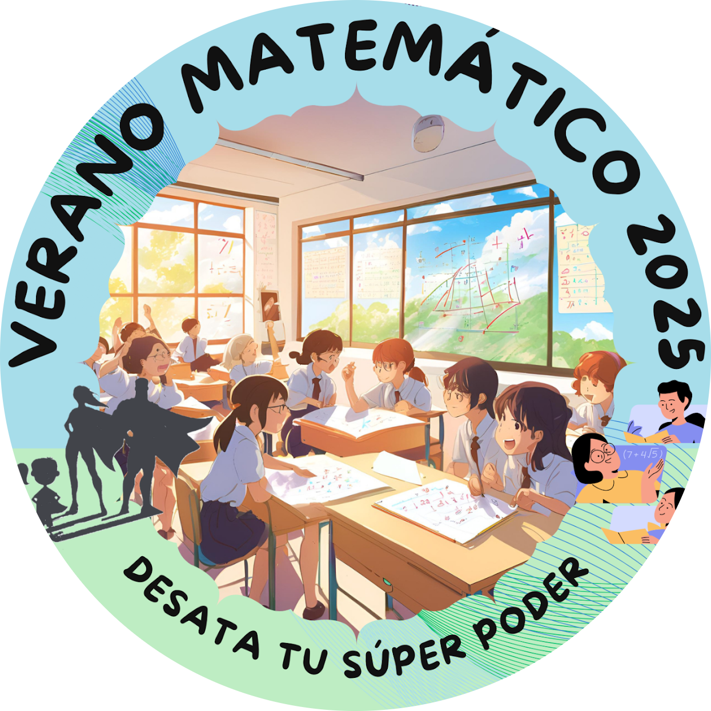

Escuela Verano Matemático 2025
UTFSM - UCHILE
Warning in readLines(input_file): incomplete final line found on 'index.qmd'
🎉 Éxito en el Verano Matemático USM-UCHILE 2025
Con mucho entusiasmo, destacamos la participación de Francisco Alfaro y Valeska Canales en el Verano Matemático USM-UCHILE 2025, una enriquecedora escuela de verano realizada del 6 al 9 de enero de 2025 en las sedes de la Universidad Técnica Federico Santa María y la Universidad de Chile en Santiago.
🌟 Inspirando a los Futuros Talentos Matemáticos
Esta iniciativa reunió a jóvenes de entre 12 y 14 años en una experiencia única que combinó matemáticas, creatividad y tecnología. Francisco y Valeska desempeñaron un papel fundamental como facilitadores de talleres, aportando aprendizaje interactivo e inspirando a los estudiantes a explorar el mundo de las matemáticas de manera lúdica e innovadora.
📚 Actividades Destacadas
Taller: Matemáticas Divertidas con Python
Los estudiantes aprendieron los conceptos básicos de programación en Python. Resolver problemas matemáticos entretenidos, como conversiones de unidades y cálculos básicos, les permitió descubrir cómo el código puede hacer las matemáticas más visuales y creativas.Taller: Python en Ciencia de Datos
Los participantes exploraron el mundo de la manipulación y visualización de datos utilizando Python. Aprendieron sobre librerías clave como pandas y matplotlib, procesaron y analizaron datos, y crearon gráficos que facilitaron la interpretación y comunicación de la información de manera efectiva.
👏 ¡Felicitaciones!
Agradecemos de corazón a Francisco, Valeska y a todo el equipo de colaboradores por su dedicación y esfuerzo, que hicieron posible el éxito de este evento. Su pasión e inspiración marcaron la diferencia para la próxima generación de matemáticos y programadores. ¡Gracias por su compromiso!
Un especial agradecimiento a la profesora Estefanía Bravo Rubio por su confianza y apoyo. ¡Significó mucho para nosotros! 💙✨
📅 Próximos Eventos
Agradecemos a todos los participantes y organizadores que hicieron posible esta experiencia. ¡Mantente atento a nuevas actividades y eventos para seguir aprendiendo y disfrutando del maravilloso mundo de las matemáticas y la tecnología!
📷 Fotos del Evento
{kind=link}
{kind=link}
{kind=link}
{kind=link}
{kind=link}
{kind=link}
{kind=link}
{kind=link}
{kind=link}
{kind=link}
{kind=link}
{kind=link}
{kind=link}
{kind=link}
{kind=link}
{kind=link}
{kind=link}
{kind=link}
{kind=link}
{kind=link}
📋 Sobre los Talleres
En el marco del Verano Matemático USM-UCHILE 2025, se llevaron a cabo dos talleres:
-
Matemáticas Divertidas con Python: Diseñado para introducir a los estudiantes en los conceptos básicos de programación con Python, utilizando ejemplos matemáticos entretenidos y visuales para hacer el aprendizaje más dinámico.
- Python en Ciencia de Datos: Enfocado en enseñar a los participantes cómo manipular y visualizar datos utilizando herramientas clave como pandas y matplotlib, fomentando la interpretación efectiva de información.
Estos talleres ofrecieron experiencias prácticas e interactivas, motivando a los estudiantes a explorar las matemáticas y la programación de forma creativa y colaborativa.
🌐 Puedes ver más sobre este evento en el siguiente enlace: Verano Matemático USM-UCHILE.